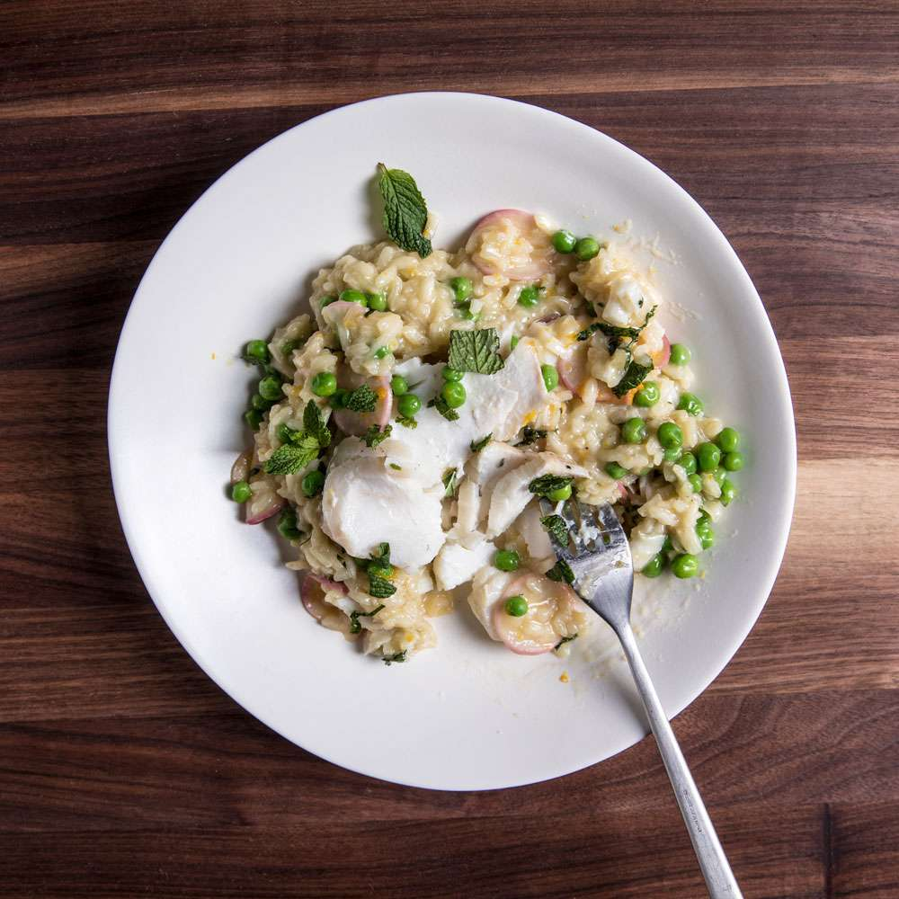
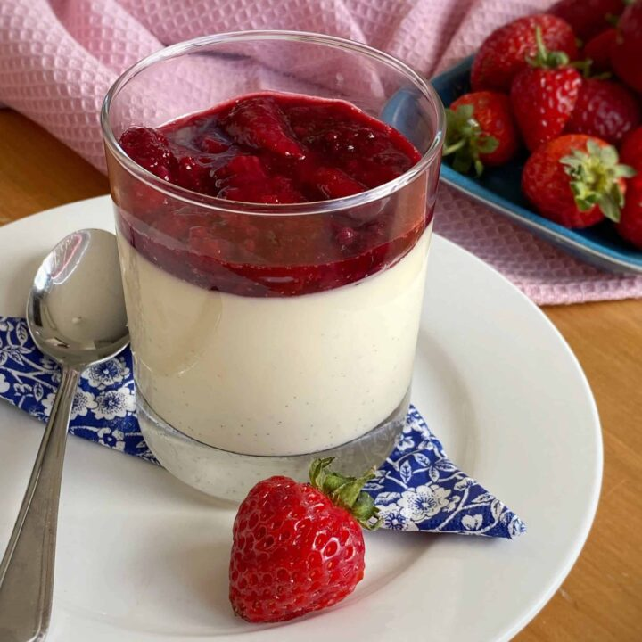

Recipes

Garlic and Olive Oil Pasta
A quick and flavorful pasta dish tossed with garlic-infused olive oil and Parmesan cheese.
Ingredients:
- 8 oz spaghetti
- 4 cloves garlic, minced
- 1/4 cup extra virgin olive oil
- 1/4 teaspoon red pepper flakes (optional)
- 1/4 cup grated Parmesan cheese
- Salt and pepper to taste
- Fresh parsley, chopped (for garnish)
Instructions:
- Cook the spaghetti according to package instructions until al dente. Drain and set aside.
- In a large skillet, heat the olive oil over medium heat. Add the minced garlic and red pepper flakes (if using). Sauté for 1-2 minutes until the garlic turns golden and fragrant.
- Add the cooked spaghetti to the skillet and toss to coat evenly with the garlic-infused olive oil.
- Add the grated Parmesan cheese, salt, and pepper. Toss again to combine.
- Remove from heat and garnish with chopped parsley.
- Serve hot and enjoy!

Mushroom Risotto
Creamy and savory risotto made with Arborio rice, mushrooms, and Parmesan cheese.
Ingredients:
- 1 cup Arborio rice
- 4 cups vegetable or chicken broth
- 1 cup mushrooms, sliced
- 1 small onion, finely chopped
- 2 cloves garlic, minced
- 2 tablespoons butter
- 1/2 cup grated Parmesan cheese
- 2 tablespoons fresh parsley, chopped
- Salt and pepper to taste
Instructions:
- In a saucepan, bring the vegetable or chicken broth to a simmer and keep it warm on low heat.
- In a separate large pan, melt the butter over medium heat. Add the chopped onion and minced garlic. Sauté for 2-3 minutes until the onion becomes translucent.
- Add the Arborio rice to the pan and stir to coat the grains with the melted butter.
- Add a ladleful of warm broth to the rice and stir continuously until the liquid is absorbed. Repeat this process, adding one ladleful at a time, and stirring until the rice is cooked al dente (tender with a slight firmness).
- Once the rice is cooked, stir in the sliced mushrooms and cook for an additional 2-3 minutes until the mushrooms are tender.
- Remove the pan from heat and stir in the grated Parmesan cheese and fresh parsley. Season with salt and pepper to taste.
- Let the risotto rest for a couple of minutes before serving.
- Garnish with additional grated Parmesan cheese and parsley if desired.
- Serve warm and enjoy!

Vanilla Panna Cotta
A silky smooth dessert made with cream, sugar, and vanilla, topped with fresh berries.
Ingredients:
- 2 cups heavy cream
- 1/2 cup granulated sugar
- 1 teaspoon vanilla extract
- 2 1/2 teaspoons gelatin powder
- 3 tablespoons cold water
- Fresh berries (strawberries, raspberries, blueberries) for serving
Instructions:
- In a small bowl, sprinkle the gelatin powder over the cold water. Let it sit for 5 minutes to bloom.
- In a saucepan, heat the heavy cream and sugar over medium heat, stirring constantly until the sugar is dissolved. Do not boil.
- Remove the saucepan from heat and stir in the vanilla extract.
- Add the bloomed gelatin to the warm cream mixture and whisk until the gelatin is completely dissolved.
- Divide the mixture among individual serving glasses or ramekins. Allow them to cool at room temperature for 15-20 minutes.
- Refrigerate the panna cotta for at least 4 hours or until set.
- Before serving, top each panna cotta with fresh berries.
- Enjoy this delightful dessert chilled!